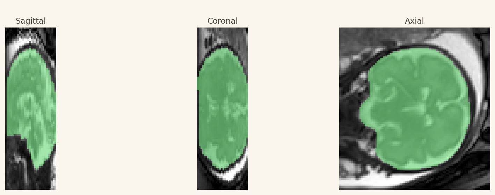

脑提取
从原始 BTFE 切片中定位并提取脑区。
覆盖率 · 前景范围AutoRecon 不让研究者记忆冗长命令。Agent 先将需求拆解成结构化任务，检查路径、工具与依赖；只有在你确认计划之后，才会调度计算。
计算范围、页面展示范围与报告证据范围彼此独立，复杂实验也能保持清晰、可复核。
每个节点都有输入、产物、日志、可视化与至少两项技术质量指标。
从原始 BTFE 切片中定位并提取脑区。
覆盖率 · 前景范围多方向二维采集重建为高分辨率三维体积。
非零比例 · 强度范围对齐孕周图谱，建立统一空间坐标。
Mattes · GC生成皮层、白质、脑室等组织标签。
标签数 · 空间一致性将图谱脑区映射到个体空间。
前景范围 · 标签完整性构建可用于形态研究的皮层表面。
表面文件 · 统计文件下方使用项目现有的去标识化研究预览。点击阶段切换结果。

LLM 只组合已注册工具，不生成任意 shell；缺少关键输入时，系统会停止并提示。
“请对 31 周胎儿从原始 BTFE 开始，运行前三步，不复用中间结果，生成完整中文报告。”
需求、计划、指标、产物、限制与报告结论完整关联。
从原始数据开始新运行，或从已验证产物断点继续。
零计算导入已有结果，直接查看可视化、QC 与报告。
只理解需求、检查依赖并生成计划，不启动 GPU。
配置非敏感参数与本地 Secret 文件后，即可启动 Agentic Dashboard。
# 配置并安全启动
cp .env.example .env
AUTORECON_SECRET_FILE=<secret-file> \
scripts/run_agentic_dashboard.sh \
--host 127.0.0.1 --port 8899
# 浏览器访问
http://127.0.0.1:8899